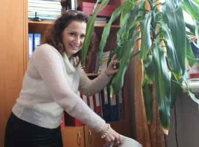
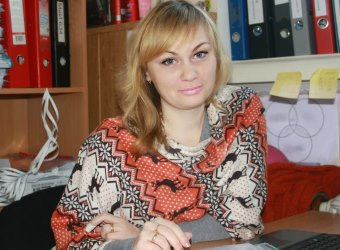
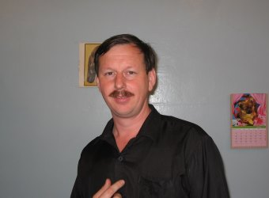
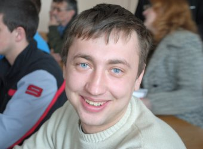
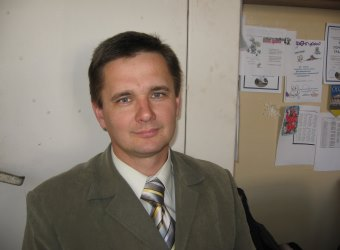
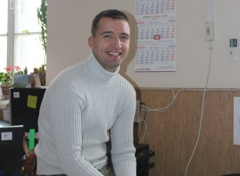
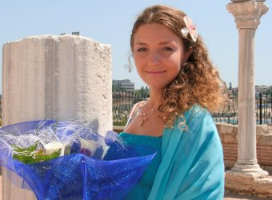

Информация по приемной кампании
1) Поступление на направления бакалавриата/специальности специалитета.
1. Условия приема для абитуриентов-крымчан и абитуриентов с континентальной России различны.
2. Абитуриенты-крымчане могут поступать как по ЕГЭ, так и по экзаменам, проводимым университетом самостоятельно.
Свой выбор абитуриенты-крымчане реализуют в момент подачи заявления и фиксируют в нем. Перечень экзаменов (ЕГЭ) для абитуриентов-крымчан:
Математика;
3. Абитуриенты из других регионов России, подающие документы на основе среднего общего образования (школьного аттестата),
поступают только на основании ЕГЭ.
При подаче документов на основе среднего или высшего профессионального образования (диплом об образовании) абитуриенты из других регионов России могут поступать на основании экзаменов,
проводимых университетом самостоятельно.
Перечень ЕГЭ (экзаменов, проводимых университетом самостоятельно) для абитуриентов из других регионов России:
Математика;
Информатика и информационно-коммуникационные технологии (ИКТ);
Русский язык.
4. Конкурсный балл определяется как сумма балла экзамена и балла за индивидуальные достижения.
Баллы за индивидуальные достижения:
а) наличие статуса чемпиона и призера Олимпийских игр, Паралимпийских игр и Сурдлимпийских игр,
чемпиона мира, чемпиона Европы, победителя первенства мира, первенства Европы по видам спорта, включенным в программы Олимпийских игр, Паралимпийских игр и Сурдлимпийских игр - 10 баллов;
б) наличие серебряного и (или) золотого значка,
полученного за результаты сдачи норм физкультурного комплекса «Готов к труду и обороне» - 2 балла;
в) наличие аттестата о среднем общем образовании с отличием, или аттестата о среднем (полном) общем образовании для награжденных золотой
или серебрянной медалью, или наличие диплома о среднем профессиональном образовании с отличием - 4 балла;
г) наличие статуса победителя или призера олимпиад школьников по общеобразовательным предметам (не используемые для получения особых прав
или преимуществ при поступлении на обучение) полученного не ранее 4 лет до дня завершения приема документов и вступительных испытаний включительно - 4 балла;
2) Поступление на направления магистратуры.
1. Условия приема для абитуриентов-крымчан и абитуриентов с континентальной России одинаковы.
2. В качестве вступительного экзамена выступают проводимые университетом вступительные
профессиональные испытаний (экзамен по специальности).
3. Конкурсный балл определяется как сумма полученного на экзамене балла, среднего балла диплома и баллов за индивидуальные достижения.
4. Конкурсный балл определяется как сумма балла экзамена и балла за индивидуальные достижения.
Баллы за индивидуальные достижения:
а) победитель или призер профессионально-ориентированной Всероссийской или Всеукраинской олимпиады – 40 баллов;
б) наличие диплома об образовании с отличием, соответствующего профилю направлению подготовки, на которую
поданы документы - 20 баллов;
в) публикация, соответствующая профилю направления подготовки на которую поданы документы, в не рецензируемом сборнике – 5 баллов;
г) публикация, соответствующая профилю направления подготовки на которую поданы документы, в рецензируемом сборнике – 10 баллов.
Индивидуальные достижения по подпунктам «в» и «г» оформляются в виде списка научных трудов в соответствии с требованиями Университета,
заверенного директором института соответствующего направлению или специальности подготовки, на которую поданы или будут поданы документы.
Минимальное количество баллов по общеобразовательным предметам вступительных испытаний для допуска к конкурсу:
• русский язык – 36 баллов;
• литература – 32 балла;
• математика – 27 баллов;
• физика – 36 баллов;
• история – 32 балла;
• английский язык – 22 балла;
• обществознание – 42 балла;
• география – 37 баллов;
• биология – 36 баллов;
• химия – 36 баллов;
Сроки этапов приемной кампании:
1) по программам средне-специального образования, бакалавриата и программам специалитета устанавливаются
следующие сроки:
а) по очной форме обучения лиц, постоянно проживающих в Крыму:
• срок начала приема документов, необходимых для поступления – 20 июня 2016г.;
• срок завершения вступительных испытаний проводимых Университетом самостоятельно
и приема документов, от лиц, поступающих на основании ЕГЭ – 10 августа 2016г.;
• срок завершения приема документов от лиц, поступающих на обучение и участвующих
в конкурсе по результатам проводимых Университетом самостоятельно вступительных испытаний – 2 августа 2016г.;
• срок зачисление на обучение:
15 – 23 августа 2016 г. (бюджет)
30 августа 2016 г. (коммерция)
б) по очной форме обучения жителей других регионов РФ:
• срок начала приема документов, необходимых для поступления – 20 июня 2016г.;
• срок завершения вступительных испытаний проводимых Университетом самостоятельно и приема документов,
от лиц, поступающих на основании ЕГЭ - 26 июля 2016г.;
• срок завершения приема документов от лиц, поступающих на обучение и участвующих
в конкурсе по результатам проводимых Университетом самостоятельно вступительных испытаний - 18 июля 2016г.;
• срок зачисления на обучение:
29 июля – 8 августа 2016 г. (бюджет)
30 августа 2016 г.(коммерция)
в) по очно-заочной и заочной формам обучения:
• срок начала приема документов, необходимых для поступления – 20 июня 2016г.;
• срок завершения приема документов у поступающих, участвующих в конкурсе по результатам проводимых
Университетом самостоятельно вступительных испытаний - 13 августа 2016г.;
• срок завершения вступительных испытаний проводимых Университетом самостоятельно и приема документов,
от лиц, поступающих на основании ЕГЭ - 20 августа 2016г.;
• срок зачисления на обучение: 30 августа 2016 г.
2) по программам магистратуры устанавливаются следующие сроки:
а) по очной и заочной форме обучения:
• срок начала приема документов, необходимых для поступления – 20 июня 2016 г.;
• срок завершения приема документов - 13 августа 2016г.;
• срок завершения проводимых Университетом самостоятельно вступительных испытаний – 20 августа 2016г.
• срок зачисления на обучение:
26 августа 2016г (бюджет)
30 августа 2016 г (коммерция)
Сроки этапов рекомендуется уточнять в приемной комиссии университета!
Состав комплекта документов:
• документ о ранее полученном образовательном (образовательно-квалификационном)
уровне, на основе которого осуществляется поступление, и приложение к нему (аттестат/диплом об образовании);
• копия документа, удостоверяющего личность и гражданство (копию паспорта) (3 шт.);
• фотографий цветная размером 3 х 4 см. (6 шт.).
Документы принимаются по адресу:
г. Севастополь, ул. Университетская 33
Обращайтесь к нам с вопросами по номерам:
Заведующая кафедрой ИБ, кандидат технических наук – Ожиганова Марина Ивановна: + 7 (978) 796-76-78
Старший преподаватель кафедры ИБ – Лебеденко Алексей Владимирович + 7 (978) 768-14-17
Преподаватель кафедры ИБ – Колодяжная Анна Юрьевна + 7 (978) 748-80-47
Напишите нам письмо с интересующим Вас вопросом:
Наш замечательный преподавательский состав кафедры ИБ

Заведующая кафедрой, кандидат технических наук, доцент
Ожиганова Марина Ивановна
Ожиганова Марина Ивановна
Заведующая кафедрой, кандидат технических наук, доцент
"Раз уж Вы (или Ваши родители) приняли решение отдать четыре года своей жизни
высшему образованию, так постарайтесь же, «что бы не было мучительно больно за бесцельно
прожитые годы». Не каждый, получив диплом, станет первоклассным специалистом, но каждый
имеет возможность получить удовольствие от познания, от общения, от совместного творчества.
Все чудеса в нашей жизни делаются нашими же руками."
Электронная почта: vip.tapki@list.ru
Контактный телефон: + 7 (978) 796-76-78

Преподаватель кафедры, кандидат технических наук, доцент
Гончаренко Юлия Юрьевна
Гончаренко Юлия Юрьевна
Преподаватель кафедры, кандидат технических наук, доцент
"Учение - это изучение правил; опыт - изучение исключений."

Старший преподаватель кафедры
Шахайда Владимир Михайлович
Шахайда Владимир Михайлович
Cтарший преподаватель кафедры
"Задача любого вуза дать начальные знания студенту.
Научить его основам знаний по выбранной специальности.
И самое главное объяснить, что дальнейшее освоение своей
профессией это постоянный процесс на всю оставшуюся жизнь."
Электронная почта: Gotlib65@mail.ru
Контактный телефон: +7 (978) 727-61-42

Старший преподаватель кафедры
Артёменко Максим Александрович
Артёменко Максим Александрович
Старший преподаватель кафедры
"Специалист будет востребован только если он имеет цель и стремится к ней.
- Развитие человека определяют знания и опыт получение им в жизни.
- Один из этапов жизни человека – это высшее образование, позволяющее сформировать
- квалифицированного специалиста."

Старший преподаватель кафедры
Смычков Евгений Егорович
Смычков Евгений Егорович
Старший преподаватель кафедры

Старший преподаватель кафедры
Лебеденко Алексей Владимирович
Лебеденко Алексей Владимирович
Старший преподаватель кафедры
"Опыт - самое главное, на мой взгляд, что должен передавать университет студенту.
Потому что знания достать не сложно, а вот правильно поступить в той или иной ситуации
— применить эти знания — тут без нашей помощи не обойтись!"
Электронная почта: alex7y88@gmail.com
Контактный телефон: + 7 (978) 768-14-17

Преподаватель кафедры
Колодяжная Анна Юрьевна
Колодяжная Анна Юрьевна
Преподаватель кафедры
Почтовый и электронный адреса:
Кафедра ИБ: 299015, г.Севастополь, ул. Курчатова, 7.
Приёмная комиссия: 299053, г. Севастополь, ул. Университетская 33.
Звоните нам по номерам:
Зав. каф. ИБ, к.т.н. – Ожиганова Марина Ивановна: + 7 (978) 796-76-78
Старший преподаватель кафедры ИБ – Лебеденко Алексей Владимирович + 7 (978) 768-14-17
Преподаватель кафедры ИБ – Колодяжная Анна Юрьевна + 7 (978) 748-80-47
Подпишись на наши сообщества, будь в курсе новостей!